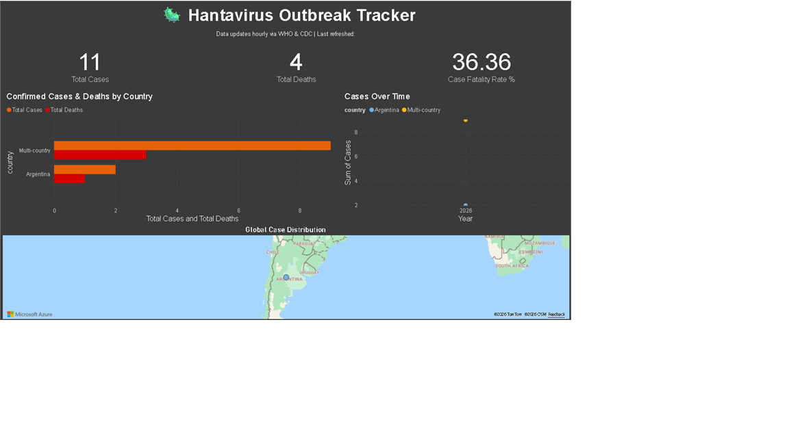

⚙️ How It Works
Python scripts pull from WHO Disease Outbreak News, WHO RSS feeds, and the CDC Open Data API every hour automatically via GitHub Actions.
Raw text reports are parsed for case counts, deaths, and geographic data. Country names are standardized and dates are formatted for Power BI.
Power BI dashboard shows global case distribution, country comparisons, trend lines over time, and interactive filters by country and date.
GitHub Actions runs the full pipeline hourly — no manual intervention needed. All data is versioned and archived in this repository.